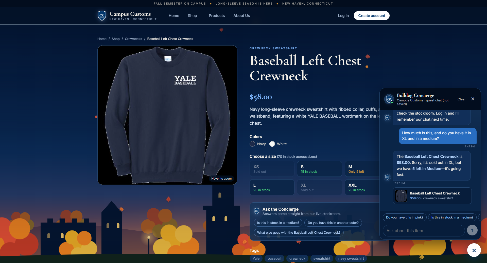
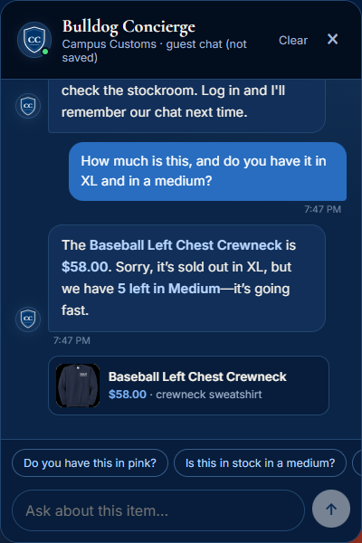
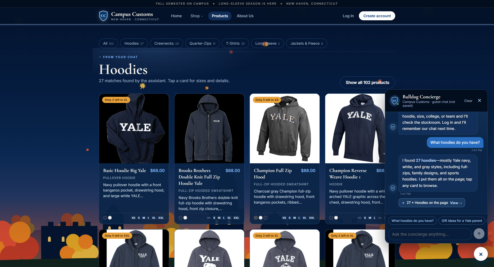
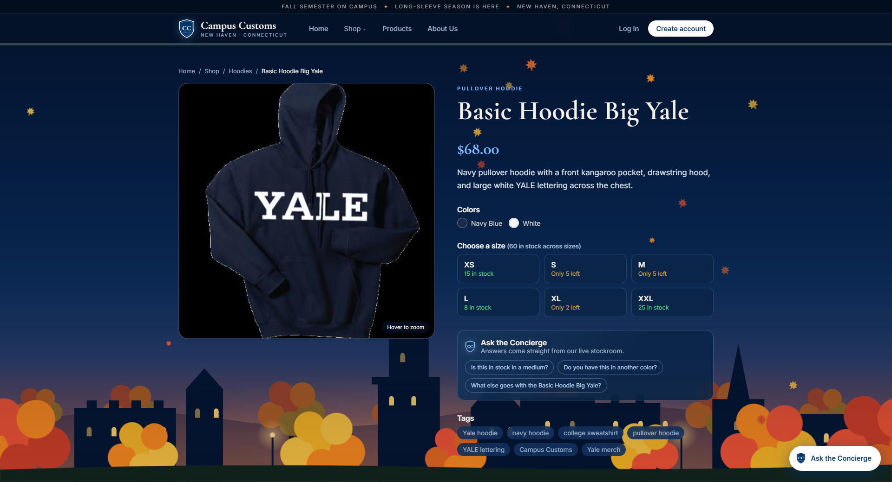
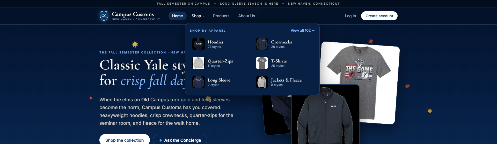
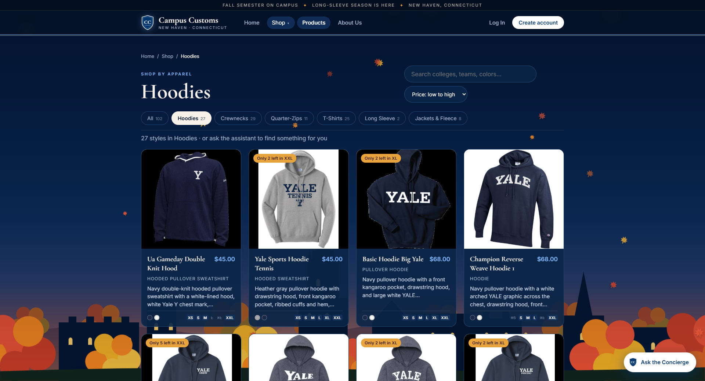

1. Chat checks the inventory level of an item
PASS: reply matches the databaseOn the Baseball Left Chest Crewneck product page, a guest asked the Bulldog Concierge:
“How much is this, and do you have it in XL and in a medium?”


Database truth for baseball-left-chest-crewneck: price $58.00.
| Size | Quantity (inventory table) | Status |
|---|---|---|
| XS | 0 | sold out |
| S | 15 | in stock |
| M | 5 | low (≤5) |
| L | 25 | in stock |
| XL | 0 | sold out |
| XXL | 25 | in stock |
- ✅ quotes $58.00
- ✅ XL (0) sold out
- ✅ M (5) reported
The reply’s price and its XL / M stock statements match these rows exactly. Nothing was invented.
2. Dynamic search-result cards after a category question
PASS: 27 cards on the page · 27 hoodies in the databaseFrom the Home page, a guest asked “What hoodies do you have?”. The agent returned structured
page_results, and the site moved to the Products page and rendered them as product cards.


/products/basic-hoodie-big-yale, with a large image and full product info.3. Problem 9 usability feature: shop by apparel type
PASS: menu, aisle tabs, breadcrumbs, and price sort all work

/products?category=hoodies&sort=price-asc with the
breadcrumb “Home / Shop / Hoodies”, the active tab “Hoodies 27”, and Price: low to high.
Cards run $45.00 → $88.00 in order.